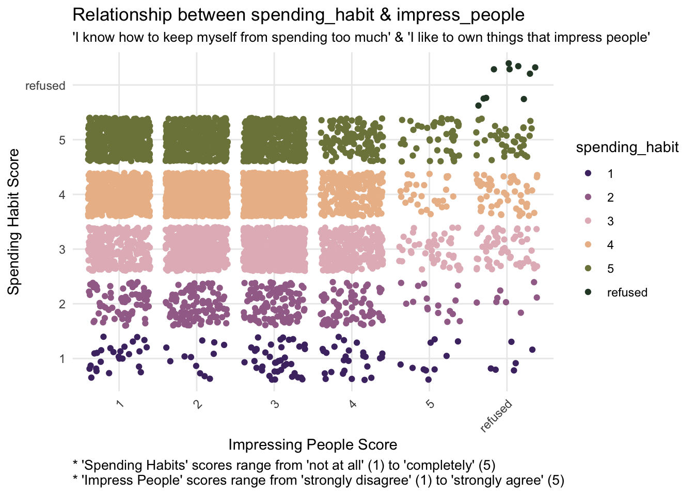
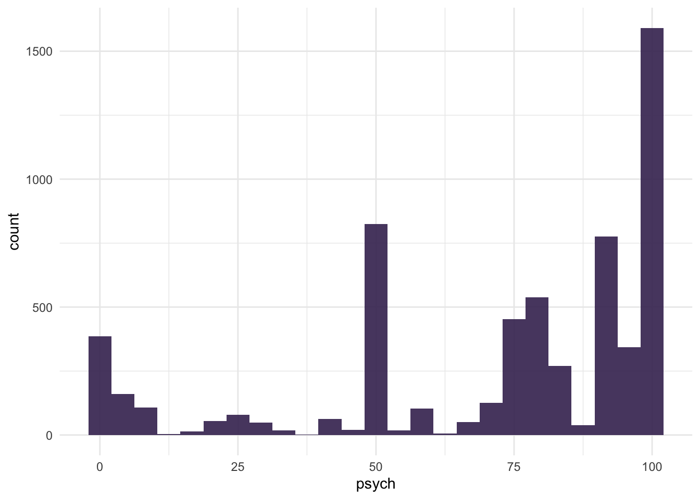

Analyzing Spending Habits With Logistic Regression
R
Exploratory Data Analysis
Logistic Regression
Shiny
Exploring indicators of spending habit behaviors using logistic regression.
Author
Ashley Russell
1 Introduction
This project investigates how various character traits influence spending behaviors in adults (18+). Using data from the National Financial Well-Being Survey (collected by the Consumer Financial Protection Bureau), I explored how these factors impact the likelihood of exhibiting “good” or “bad” spending habits across different age groups.
1.1 Rationale
I found this an interesting topic as it prompted me to reflect on my own spending habits.
1.2 About the Data
The data was collected from a diverse sample of adults (18 and older) across all 50 U.S. states and the District of Columbia, conducted between October 27 and December 5, 2016. The sample included 6,394 individuals (5,295 from the general population and 999 from an oversample of adults aged 62 and over). This dataset is randomized and aims to be representative of the adult population.
2 Data Wrangling
Preliminary steps included loading the necessary libraries, importing the dataset, and extracting the variables I wanted from it into a data frame.
The various age groups were using ordinal encoding, so I renamed them to reflect the ages they represented (e.g. 18-24 instead of 1, 25-34 instead of 2 and so forth).
I had two primary goals—to explore the data using graphs and to understand the relationship between our response variable and the predictor variables via statistical modeling, which would require different approaches (such as creating a category for missing values vs imputing them). Consequently, I made two copies of the data frame. As the names suggest, finance_analysis was used for the exploratory data analysis and finance_modeling for the modeling portion of this project.
Here’s a preview of the first 6 rows in the data frame:
Previewing Data (expand to view code)
head(finance) |>kable()
follow_commitment
frugality
worded_probability
percentage_skill
goal_confidence
admire_luxury
self_worth
impress_people
psych
distress
impulsivity
resist_temptation
long_term_goals
economic_mobility
spending_habit
age_group
wellbeing
4
6
3
3
3
3
5
4
80
4
2
3
3
3
3
75+
55
4
5
5
5
3
3
4
3
95
3
2
4
3
4
3
35-44
51
3
5
4
4
3
4
4
3
50
2
3
3
3
6
3
35-44
49
-1
6
-1
-1
-1
-1
-1
-1
-1
-1
-1
-1
-1
-1
3
35-44
49
3
4
4
4
3
3
3
3
0
3
3
3
3
4
3
25-34
49
5
5
5
6
4
3
3
2
80
4
1
3
3
7
4
25-34
67
3 Exploring Missing Responses
3.1 Counting Refused Questions
Each column, except for wellbeing, represents a question answered by a respondent (wellbeing is a score given to the respondent based on answers to particular questions). “-1” means that the respondent refused to answer the question. I opted to count the number of questions (out of a total of 16) unanswered by each respondent and calculated a “refusal rate” for enhanced readability (“this person refused to answer 75% of the included questions” sounds nicer than “this person refused to answer 12 of the included questions”).
This led to the creation of two additional columns: refused_questions for the raw number and refusal_rate for the percentage.
Most responses in our outcome variable fell in group 4, meaning respondents generally answered “very well” to the prompt “I know how to keep myself from spending too much.” Group 1 (“not at all”) had the fewest responses.
If we were to reimagine this variable as binary, i.e., grouping responses 1–3 as “lower spending control” and responses 4–5 as “higher spending control”, the majority of the responses would fall into the latter category.
Spending Habit Bar Chart (expand to view code)
spending_univariate <-ggplot(finance_analysis, aes(x = spending_habit)) +geom_bar(fill ="#412d5e", alpha =0.9) +labs(title ="Distribution of Spending Habit Scores",x ="Scores (Ranging From '1: Not At All' to '5: Completely')",y ="Number of Respondents",caption ="Prompt: 'I know how to keep myself from spending too much.'") +theme_minimal() +theme(plot.caption =element_text(hjust =0, size =10),axis.text.x =element_text(angle =45, hjust =1) )spending_univariate
4.2 Bivariate Patterns
Both frugality and follow_commitment show a positive trend: as spending_habit scores increase, the corresponding predictor scores also increase.
This relationship is visually evident in the increasing density of points in the upper right areas of both plots, suggesting that respondents with higher reported spending habit scores also report higher frugality and stronger follow-through on commitments.
frugality_bivariate <-ggplot(finance_analysis, aes(x = frugality, y = spending_habit, color = spending_habit)) +geom_jitter() +labs(title ="Relationship between spending_habit & frugality",x ="Frugality Score",y ="Spending Habit Score",subtitle ="'I know how to keep myself from spending too much' & 'If I can reuse an item I already have, there's \nno sense in buying something new'",caption ="* 'Spending Habits' scores range from 'not at all' (1) to 'completely' (5) \n* 'Frugality' scores range from 'strongly disagree' (1) to 'strongly agree' (6)") +theme_minimal() +scale_color_wa_d("stuart") +theme(plot.caption =element_text(hjust =0, size =10),plot.subtitle =element_text(size =10),axis.text.x =element_text(angle =45, hjust =1) )commitment_bivariate <-ggplot(finance_analysis, aes(x = follow_commitment, y = spending_habit, color = spending_habit)) +geom_jitter() +labs(title ="Relationship between spending_habit & follow_commitment",x ="Following Commitment Score",y ="Spending Habit Score",subtitle ="'I know how to keep myself from spending too much' & 'I follow-through on my financial \ncommitments to others'",caption ="* 'Spending Habits' scores range from 'not at all' (1) to 'completely' (5) \n* 'Follow Commitment' scores range from 'not at all' (1) to 'completely' (5)") +theme_minimal() +scale_color_wa_d("stuart") +theme(plot.caption =element_text(hjust =0, size =10),plot.subtitle =element_text(size =10),axis.text.x =element_text(angle =45, hjust =1) )frugality_bivariatecommitment_bivariate
Both impress_people and impulsivity display the opposite pattern: a negative relationship with spending_habit. As spending_habit scores increase, these predictor scores decrease, which can be seen in the decreasing density of points across the x-axis.
This suggests that respondents with higher reported spending habit scores tend to report lower impulsivity and desire to impress others.
impress_bivariate <-ggplot(finance_analysis, aes(x = impress_people, y = spending_habit, color = spending_habit)) +geom_jitter() +labs(title ="Relationship between spending_habit & impress_people",x ="Impressing People Score",y ="Spending Habit Score",subtitle ="'I know how to keep myself from spending too much' & 'I like to own things that impress people'",caption ="* 'Spending Habits' scores range from 'not at all' (1) to 'completely' (5) \n* 'Impress People' scores range from 'strongly disagree' (1) to 'strongly agree' (5)") +theme_minimal() +scale_color_wa_d("stuart") +theme(plot.caption =element_text(hjust =0, size =10),plot.subtitle =element_text(size =10),axis.text.x =element_text(angle =45, hjust =1) )impulsivity_bivariate <-ggplot(finance_analysis, aes(x = impulsivity, y = spending_habit, color = spending_habit)) +geom_jitter() +labs(title ="Relationship between spending_habit & impulsivity",x ="Impulsivity Score",y ="Spending Habit Score",subtitle ="'I know how to keep myself from spending too much' & 'I often act without thinking \nthrough all the alternatives'",caption ="* 'Spending Habits' scores range from 'not at all' (1) to 'completely' (5) \n* 'Impulsivity' scores range from 'not at all' (1) to 'completely well' (4)") +theme_minimal() +scale_color_wa_d("stuart") +theme(plot.caption =element_text(hjust =0, size =10),plot.subtitle =element_text(size =10),axis.text.x =element_text(angle =45, hjust =1) )impress_bivariateimpulsivity_bivariate

5 Interactive Visual Overviews
5.1 Data Dictionary & Univariate Plots
This interactive app includes a data dictionary and visual summaries of how responses are distributed across each variable.
5.1.1 Calculating Highlighted Points for Density Plots
In two of the distribution graphs (the density plots for the quantitative predictors wellbeing and psych), specific points are highlighted to represent refused or unrecorded responses. These were plotted using density() to estimate the distribution of the variable and approx() to get the approximate y-value at the specified points.
Calculating Highlighted Points (expand to view code)
Exploring Distribution of Quantitative Variables (expand to view code)
gf_histogram(~psych, data = finance_modeling, fill ="#412d5e", alpha =0.9) +theme_minimal()gf_histogram(~wellbeing, data = finance_modeling, fill ="#412d5e", alpha =0.9) +theme_minimal()

Imputing Missing Values in Quantitative Variables (expand to view code)
First, I fitted a binary logistic regression model and included all of the predictor variables. This served as a baseline for feature selection.
Fitting General Model With All Predictors (expand to view code)
general_model <-glm(spending_binary ~ . - spending_habit, data = finance_modeling, family ="binomial")
6.2.1 Feature Selection
I used stepwise selection (both forward and backward) to identify the “best” set of predictors (i.e., predictors with a statistically meaningful relationship to the response variable). This was done twice: once using AIC (Akaike Information Criterion), and once using BIC (Bayesian Information Criterion).
In other words, AIC generally favors more complex models that include predictors contributing meaningfully to accuracy, whereas BIC is stricter and prefers a simpler model with only the most impactful predictors.
Applied here, AIC is used to identify predictors that have some relationship with the response, while BIC narrows our focus to the strongest predictors.
Stepwise Selection with AIC (expand to view code)
model_AIC <-stepAIC(general_model, direction ="both", k =2, trace =FALSE)
Stepwise Selection with BIC (expand to view code)
# I needed to get the number of observationsn <-nrow(finance_modeling)model_BIC <-stepAIC(general_model, direction ="both", k =log(n), trace =FALSE)
6.2.1.1 Examining the AIC Model
According to the AIC model, the most indicative predictors of spending habits include:
Financial behaviors: ability to follow [financial] commitments, be frugal, resist temptation, and work toward long-term goals; financial well-being score
Cognitive preferences: preference for numbers over words and comfort with percentages
Psychological factors: confidence in financial goals, desire to impress others, psychological connectedness, stress, and impulsivity
The categorical (ordinal) predictors appeared stable across levels. The continuous variable wellbeing showed a roughly linear trend, suggesting the assumption of linearity on the logit scale was reasonably met.
To avoid redundancy, I only did this for the BIC model. We can reasonably assume that the assumption holds true for the AIC model.
Independence of Observations
Each observation represents a unique, individual survey response. No groups (such as same households or repeat responses) are present. Therefore, the model meets this assumption.
The \(GVIF^{(\frac{1}{2\times Df})}\) column contains adjusted VIF values. All values are below 2, indicating no serious multicollinearity.
BIC Model:
BIC Model Variance (expand to view code)
vif_bic <-vif(model_BIC)vif_bic |>kable()
GVIF
Df
GVIF^(1/(2*Df))
follow_commitment
1.214668
4
1.024607
frugality
1.131563
5
1.012437
goal_confidence
1.421325
3
1.060349
impulsivity
1.146548
3
1.023054
resist_temptation
1.163430
3
1.025550
wellbeing
1.354680
1
1.163907
Similarly, all values in the \(GVIF^{(\frac{1}{2\times Df})}\) column are less than 2, once again indicating that there is no notable multicollinearity.
No (Influential) Outliers I used standardized residuals to identify potential outliers. No observations exceeded the common threshold of ±3, suggesting the model fits individual data points well and meets the assumption of no extreme residuals.
Augmenting Model and Filtering Residuals (expand to view code)
I used spending_binary as the response variable. Consequently, both models meet this assumption.
To wrap things up, I ranked the predictors based on their coefficients. The higher the coefficient is, the stronger the relationship.
Ranking Predictors Based On Effect (expand to view code)
coef_summary <-summary(model_BIC)$coefficients# I had to turn the summary into a data frame so I could group by variablecoef_df <-as.data.frame(coef_summary) |>mutate(term =rownames(coef_summary)) |>filter(term !="(Intercept)") |>mutate(variable =str_remove(term, "\\d+$")) |>group_by(variable) |>summarise(total_effect =sum(abs(Estimate))) |>arrange(desc(total_effect))coef_df |>kable()
variable
total_effect
frugality
3.7410909
resist_temptation
2.9465421
follow_commitment
1.7087117
impulsivity
1.3665486
goal_confidence
1.2320587
wellbeing
0.0358059
Our takeaway here is that frugality and resist_temptation are the strongest factors contributing to a respondent’s spending_habit score.
I used a predicted probabilities plot to visualize how these two factors affected our model.
As frugality and resist_temptation scores increased, so did the predicted probability of having a “good” spending_habit score.
7 Final Thoughts
In conclusion, discipline (ability to be frugal and resist temptation) was the biggest indicator of one’s spending habits.
The ability to follow through with commitments, curb impulsivity, and confidence in achieving financial goals were also notable factors.
The financial well-being score also had a noticeable impact, but it was weak compared to the aforementioned factors.
7.1 Limitations
Scores were self-reported, and, given the nature of the topic, likely unreliable.
8 Reflection
The first iteration of this project was for my Multiple Regression Analysis class and looked nothing like this final version. I spent a bit of time “improving” it, breaking it, starting over, and changing my approach along the way. Personally, this project represents growth; it was me asking: how can I take this thing I did and make it better?
At one point, I considered using a random forest to find the “best” predictors. At another time, I attempted multinomial logistic regression. These experiments, while fun, reminded me to “keep it simple, stupid!” where appropriate, especially since my main objective was to explore potential relationships.
I am not opposed to using what I’ve learned in my Statistical Machine Learning class to create a classification tool in the future. That is likely what I will do next, as I continue to build, break, learn, and repeat.